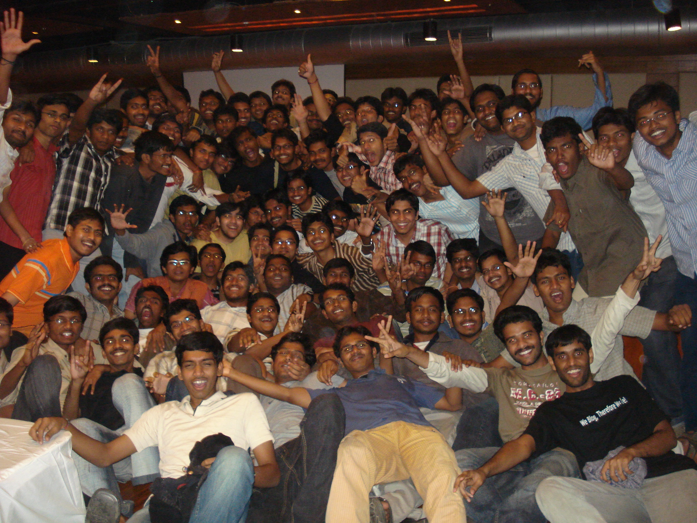

The Yearbook - Commemorating 2005-09!
sana's profile information
Name - sanaBirthday - 16-9-1987
Email - pradeepkumarspk@gmail.com
Address - opp. e-seva, srikaulam
Phone - 9441589811
Hobbies - playing cards, cricket
Memorabilia - felicity-08,09
What would you want to be remembered as - sana
Testimonials written to sana
sana's Album

sana

{kind=link}
best party ever
{kind=link}
Testimonials
For valiveti venkata srikanthPandEGA........
we cal him panda....
he is my physics proj partner and got a good company with him at dat time....maama we rocked de proj....
He has got a lot of enthusiasm and works a lot...
veedu entha kasi gaadante PEGA lo select ayina next morning poddunna 6ki lechi Java chadavatam modalu pettadu........
wing cricket lo he is one of de good players...and has a lot of interest in crkt....
computer games keka aadathadu....
he has a got a good helping hand...
totally he is one of de good frnds i had in iiit and once again congrats for PEGA ra....all de best for ur future...
For Ravi Chandra
mokka...first of all display pic adurs ra....
he is one of the thinnest guys in iiit....
He works during nite time
 and sleeps in day time....i have never seen in mess during breakfast...
and sleeps in day time....i have never seen in mess during breakfast...
He is very talented but baddakam ekkuva....start making use of ur talent dude...
veediki orkut lo community create chesarante inka ardam chesukovochchu ...........
TT keka aaduthadu and a good throw bowler
in crkt...
All in all, he is a very good frnd and all de best for ur future ra..........
For Rajesh kumar kothuri
He is the one of de thinnest guys in iiit......
goutham pakka room lo vunna inka sahananga aa room lone vunnavante..........hats off to u ra...

He is a very good guy and got a good helping hand...i think he cals evey one as maama....
he is a regular customer of shopper's stop

he plays wing cricket...and he is a computer games freak...
All de best for ur future ra....
PS : koncham thintundu ra....
PS : Deccan chargers rocks ra...
For MNV Kartheek
damadamadamadamadamadamadamadamadama...........
he is the kasi of dual degree students....
the sattupalli hero and valla village gurinchi chala goppalu chepthadu...
He read prefixes of almost all books in library...got good knowledge in all fields...
he plays a descent cricket and a good foot ball player.....
he is the coin boy in cricket...
he narrates a lot of stories.....
and appudappudu hot hot discussions kuda jaruguthuntayi maa madhya.......we njoy them
He gets tensed for ny small issue also....
hmmm....i forgot abt TEA...iiit surroundings lo vunna tea shops anninti lo veedu tea taste chesadu as if vikas tasted biryani in all hyd restaurants...
veedu anni movies pageups kotti chusthadu....
all in all, he is a very good frnd....and all de best for ur MS ra...hope u finish it in 4.5 yrs....
PS : thvara lone mee ooriki volvo bus ravalani korukuntunna ra....
PS : tea is also available in OBH
For Chakrapani
chakrapani anagaane gold medals gurthuku vasthayi...he is a very good athlete...he started it in iiit only......congrats for all ur medals ra...hope u continue in future also wherever u go...
veedu edaina pani anukunte thappaka chesthadu....and puts all his efforts in it...
he has a lot of plans in future....and i hope u finish off ur plans successfully....
totally, he is a very good frnd of mine, and all de best for ur future ra...
For Bharat Ram Ambati
ambati, he is ever ready to help ny one...
he got a good helping hand and contributing a lot to ashakiran now...gud ra...cary on in future also...
veediki chethi doola kuda ekkuve....andaruu veedu ekkada kodathado ani bayapadathuu vuntaru...koncham daya thaluchu ra ambati...
He is a very good frnd and always active....
he is the main victim of vibbu...and still he keeps a smiling face..
All the best for ur MS ra, try to complete in 4.5 yrs.......get well soon ra...
btw dual degree **cks
For anjaneya srinivas
anji, with which we cal him....
He is a bit studious and xams mundu andariki chepthadu kuda....gud ra...
he has got a good helping hand...
congrats for dell ra...actually he deserves a better one........nyway dell is lucky...
all de best for ur future ra....and touch lo vundu...
For S.Rama Krishna Raju
raju is a very good person...
a hard working and a sincere guy...and a strict TA..
veedu eppudaina neat ga kanipisthe, varam rojula tharvatha aa roje snanam chesinattu....
veediki 4th yr lo emaindo kani..thega interact chesadu juniors tho...
skit cheddamani pattu patti...cheyipinchadu....and the success credit goes to u raa...
ghajini action baa chesav ra kani scenes marichipoku ra...we had a grt time during the practise sessions...modhatlo veedu practise sessions ki kuda tip top ga enduku ready ayyi vasthunnado ardam kaale....kani tharvatha tharvatha ardam ayyindi...

MS 5yrs lo complete chese vadilo veedu guarantee ga vuntadu ani na vuddesam...all de best for ur MS ra....5th yr lo pandaga cheddam....
For Kiran Neelisetty
kiran...we cal him neelu..our relation started from B4 group..
a very good bowler
, batting baa chesthav ra nuvvu ...concentrate on batting also
wing cricket aithe manode king...
he is the coach to panda, erreddy and some other guys
TT baa aadathadu
flirting king
...ofcourse he stopped it now..appatlo sms lu aagevi kadu....
eppudaina bayataku velli thindaam ante ready ga vuntadu...
he is a very good frnd....
i hope u finish of ur MS asap and all de best ra..
For Kranthi Reddy. B
kranthi reddy...my neighbor in 1st yr...
kranthi anagaane gurthuku vochchedi crkt........inka cheppanakkarledu...u rock dude
 ...
...
1st yr lo acads lite theesukunnadu but 2nd yr lo anukunta kasi kasi ga chadivadu..
and ippudu inka assalu thaggatledu...cary on dude
he got good helping nature and gives good value to frnds....
iiit ki vochchinaka manchi student ayyado ledo thelidu gani manchi cook ayyadu.....
manam 5th yr lo pandaga cheddam ra...btw dual degree **cks dude...
i hope u finish of ur MS in 5 yrs and all de best ra...
PS1 : nee long hair foto orkut lo petta..chusko
PS2 : arey papam srp ni vodiley ra....
PS3 : maa andariki oka roju vondi pettu...
For Sunil Soni
soni...item soni...
he is the seetha...
one of the posh guys in iiit...
chala kasi gadu.....maintains a very good cg
maintains a gf in every state border...arey ala ekkada padithe akkada viththanalu jallaku ra...
he is a very good frnd and makes some good comedy also...
naku veedi gurinchi e roje(24/4/09) mess lo oka vishayam jnrs dwara thelisindi....hmmm soni come on, tell de truth...we wanna c u on stage tomorrow..
a good volleyball player and crkt kuda baane aaduthadu..
i wish u all de best for ur future dude......keep in touch...
For Bhanukiran Vinzamuri
bhanu is a very cheerful person...and our relation started in gheb...
he gives good suggestions....
hyd kabatti varam ki okasari intiki pothuntadu...
he is regular guy to gym...and maintains a proper diet...takes health drinks...good ra, cary on in future also..
ee madhya pizzala meda paddadu....jagratha ra bhanu...
he takes good care of his things...
one of the wwe fans and wwe rocks dude....
dual degree **cks dude.........
i hope u finish ur ms in 5 yrs and all de best ra...
For Raja sekhar reddy A
sekhar gadiki okappudu boothulu flow ala vachchedi...ee madhyana thaggindi...
he is a very good frnd....
crkt lo fielding baa chesthadu....catches aithe inka kummuthadu....CS baa aadathadu....
veediki antha thondaraga kick ekkadanta...
silent ga vundi okkasari joke vesthadu....
all de best dude......
For Arun M.S.C
arun,..appudappudu m.s.c. ani pilustham....
peddapuram dheggare veedi illu...so manodu maanchi hmmmmmmmmmmm
a gud athlete, shuttle rachcha leputhadu...body baa maintain chesthadu....
maintains good relationship with every one...
professor, LPU lo rachcha lepali....
all de best for ur future dude.........touch lo vuntundu...
For Srirang Ranjalkar
srirang a.k.a DJ a.k.a ranga and so .........................
active guy in cultural activities
........involves a lot in house affairs.....gud ra..nee dances marichipolem ra....
a good singer also.....
ever smiling face...and is always cool....
ala matladuthune vuntadu......
gives good value to frnds and never hurts ny one....
rachcha cheyyataniki ready ga vuntadu..........u can c him in all de felicity rachcha videos....
we had a grt time in gheb for the first two years ...........
acads lo manodu lite theesukune rakam
....but somehow manages his acads
coming to crkt......he is a decent player...okko sari bowling kummuthadu...
and veedu fotos ki stills inka cheppanakkarledu
....passport photo style nunchi dhonga kollu pattevadi style varaku anneee try chesthadu ........veediki thodu inka sashidar vuntadu ilanti vatiki..hahahahahaha
He is one of the grt frnds i had......all de best for ur future ra.....touch lo vuntundu ra...
PS : verizon lo vunna mabbu gallani nuvve active cheyyali....
For Hari krishna
hari krishna a.k.a. bodi..........
veedu vunte asalu time theliyadu.........edo oka sodi petti navvisthuu vuntadu....ofcourse koncham exaggerate chesthadu anukondi.....adi vere vishayam
veedu decisions chala thondaraga marchesthuntadu...
veedi bathukantha lab lone..........eppuduuu road medane kalusthadu......
avunu aa hair entra......nimashaniki okasari comb theesi duvvuthaa vuntav
he is the super star(krishna)
acting lo king manodu
........krishna action practise chesina anni rojulu ye pani chesina krishna laa ne chesevadu.........aa patra lo ala pathukupoyadu
tharvatha kuntodi la inka baa act chesadu...
we had a grt time during the skit practise sessions.......
manodiki girl frnds chala thakkuva
 ........roju ratri 3 gantalaki vallatho matladadu......nimasham ki oka sms kottadu.....pavu gantakoka msd cal ivvadu.....poddunna veedni vallu leparu.......thokka lo crop ppt ki vallu best of luck chepparu.........next day ppt ela ayyindani adagaru.....................................papam bodi.
........roju ratri 3 gantalaki vallatho matladadu......nimasham ki oka sms kottadu.....pavu gantakoka msd cal ivvadu.....poddunna veedni vallu leparu.......thokka lo crop ppt ki vallu best of luck chepparu.........next day ppt ela ayyindani adagaru.....................................papam bodi.
me : hari trip ki raanantunnadu chinna pillodi la..........
fa**y : avunendi hari chinna pillodu....vadiki bayam ekkuva...
me : memu antha vunnam kada bayamenduku....
fa**y : meeru antha vadni bachcha chesi aadukuntarani bayam endi.....maa hari ni emi anodhdhu......please..
he is one who always tries to make people around him laugh with his grt comedy or by becoming an item..........
one must dare to go to his room.........
edaina vasthuvu isthe veedu chalaaaaaaaaaaaa jagratha ga vunchuthadu
ee time ki ready ayyi kindaki raa ra ante.....aa time ki snanam ki velthadu...entra bodi boththi ga time sense ledu.........
all in all he is a good frnd, but koncham late ga kalisadu.................all de best for ur future ra........touch lo vuntundu......
PS : nee face maree antha daridram ga vundadu...parledu chubettu....janalu bayapadakunda nenu chusukunta
For M.Bhanu Chandra
bhanu a.k.a bun bhanu a.k.a gym bhanu....
he is a devotional guy and gives good value to frnds
.......
rojuu poddunne lechi puja chesi, gym ki velthadu......puja cheyyande bayataki raadu...gud ra konni ila patisthuu vundali...continue...
he is the logic king........veedu cheppe reasons aithe oka range...
his reply to any thing is "chetha kavatledu ra"...........koncham baddakam thagginchu ra...
one of the irregular guys to classes.........and again the same reply chetha kaledu ra..
he is my EW project partner and for some more projects also....
and acads lo he is a iiitian....koncham lite theesukuntuu vuntadu...
presentation edaina vundante inka chudali.........power point lo fonts anniti meda research chesthadu, matter kanna fonts ke ekkuva importance isthadu....and inka aa roju aithe neat ga formal vesukuni ready avuthadu......
one of the regular candidates to nbh mess and we used to hav grt time in mess .....
crkt, batting baa aadathadu.......most of de shots to leg side only...
fut ball baane aadathadu but ippudu aapesadu....continue cheyyu ra...
inka computer games aithe pichchi pichchi ga aadathadu, mainly cs............
totally, he is a grt frnd and never hurts any one.....all de best for ur future ra.....next yr IIM kottali...........
For UmaMahesh.Allenki
umamahesh. a.k.a homo..a.k.a homs......and sometimes we cal him ummma
he is de peddapalli hero...
He dont like to take much risks.....
edaina pani anukunte thappakunda chesi theeruthadu
.......he follows a procedure for every thing.......
keeps his room neat and clean
mingles with every one very easily....
circuits chala neat ga connect chesthadu...
nee hairstyle keka ra......maa uncle okariki kuda ade hairstyle....
takes good care of his hair.....and health conscious kuda ekkuve.....yuktahar daily candidate
coming to crkt, he is a decent player........and TT ippudippude nerchukuntunnadu...
in acads, he maintains the MIT standard notes.....many requested him to scan the notes and put in his website, but manaki antha adrushtam ledu....
DFT clas lo veedi valla manchi time pass avuthadi....
totally, he is one of the good frnds i had in iiit.....i enjoyed ur company ra....once again congrats for the job in perfint
and all de best for ur future ra...........touch lo vundu....For goutham
goutham..........the bathu bachcha
 of our batch,...sry of iiit
of our batch,...sry of iiit
we cal him bathu, goti, gopu,.........
dont dare to knock his room when he is sleeping.....i saw people knocking the door and start running away from his room...
veedu vaadevi anni ohio nunchi import chesinave........
Real men dont need v****a
His sayings are "kosi chethilo pedatha, vadni patraara poyi, cheddi vippi collg antha vurikistha, cheddi vippi thantha, kosi karam pedatha,.........................."
he is the counter king
,...many asked him to introduce counters school but manaki antha adrushtam ledu......ther is a community in orkut (goti fan sena : http://www.orkut.co.in/Main#Community.aspx?cmm=59113802)
mess ki veedu vachchinappudu sha2 kallallo bayam chudali
 .....janalani adaragottaku ra ala......
.....janalani adaragottaku ra ala......
his creativity is excellent......kathalu ala alluku pothaa vuntadu...
NA class lo manodi kalalanni bayata paddayi
.......aa time lo vv tho ekkuva thiriginattunnadu
ye class lo ayina pakkana vunna vadni gokuthuu vuntadu......dft clas lo okasari mundu vunna vallani gokadaniki try chesadu......well tried ra bathu
he does not show ny interest in outdoor games.....plays only computer games...
coming to acads, iit physics lo 54 marks ante veedu entha kasi gado thelusthundi
...first two years lo cg koncham thakkuva ayina, 3rd and 4th yrs lo asalu daridapulu lo lekunda poyadu.............
naa honours partner........iddaram item lu ayyam......
btw manodu mbbs ki foundation kuda vesaadu.......one week bipc tho mammalni champuthuu vuntadu...
we all had grt time with u, without you all our b.tech lives would be boring..........u r one of the grt frnds i had in iiit ra...
nee counters, nee sayings eppatikeee marichipolem........all de best for ur future ra...
For Nagarjuna Pavan Kumar G
nagarjuna........but we pronounce in a different way (the one in ANR spoof)
actually we cal him nag........
nalugu samvathsarala bandam...unforgettable
first meet : first day in 119(seminar hall) along with kartheek
i still cant forget one day : memu hostel ki vasthunnam, akkada steps dheggara snrs ragging chesthunnaru...memu chusi bayapadi venakki vellipoyam...lib mundu vunna stage dheggara kurchuni chala sepu sodi vesaam.......thirig hostel ki vochchinappataki inka snrs akkade vunnaru........thappaka inka vellam........vadni pattukunnaru but maa anna akkada vundadam valla nenu escape.......
we had a great time in gheb and even in obh.....had some good trips also......mess ki velletappudu nannu lepe vadu but ippudu nene leputhunna.....
GHEB lo metla meda kurchuni matladukune rojulu marichipolenu .....
He is a bit aggressive and tells frankly if u r doing something wrong.......koncham kopam thagginchukodaniki chudu ra, kopam anni chotla paniki radu kada (just an advice)
helping nature kuda ekkuve......
Telugu movies and songs info mottam up to date vuntadu.........has a lot of interest on music.........aa kasi thone iiit lo telugu anthyakshari ni success chesadu.....congrats once again ra....
cricket vishayaniki vasthe...parledu baane aaduthadu
, just kidding....fielding adurs....gheb mundu baa aadevadu..........
basket ball baa aaduthadu
but aapesadu......malli start cheyyu ra........
TT naku nerpinchinde veede.........
we used to hav hot hot discussions frequently, but nothing personal.........
totally he is one of the good frnds i hav in iiit, without him my b.tech life would be a bit boring.....all de best for ur future ra...........b.tech tharvatha touch lo vundu ra....
For shashank lagishetty
shashank......we cal him lagi
He is one of the taleanted guys in iiit
, mathematics ante ekkadaleni kasi mottam chuspisthadu... TA for almost all math courses....
he is very cool and accepts all the jokes whatever we pose on him.........
sometimes he keeps an unforgettable expression saying "enti ra...."
adi aithe awesome
now a days he is getting very much interested in social activities...good ra.....carry on in future also
one of the main victims in nbh mess....papam veedu chala amayakudu...
he has a nice hair style
and juttu muttukunte oppukodu........
hair paiki theesi chusthe asalu sangathi bayatapadathundi ani bayam veediki
one of the fans of wrestling....
health and beauty conscious ekkuva........b'day roju cake mokam ki antanivvaledu asalu..
veedu chala kasi gadu......he maintains his CG xactly around 8.5.......grt ra
inka maa skit gurinchi vasthe.........asalu practise lo aithe pichchi pichchi ga enjoy chesaam......his name was changed to "shashank babu" after the skit....nice dance ra lagi.......asalu oka skit cheddamani mammalni vuthsaha parichadu..
..and we made it a grand success ra........
He is ever ready to play cricket.........sachin's biggest fan.......kaakapothe community nunchi tharimesaru xtralu chesinanduku....
OPL idea ni veluguloki theesukochchadu...and successfully started ...congrats maama
all in all, he is one of the great frnds i had in iiit..........manam 5th yr lo pandaga cheddam ra...hope u finish ur dual degree in 5 yrs........all de best dude...
For V.V.Chaitanya Krishna
vv.....vasana vv, the name with which we cal him.....
He is a nice guy to spend time...He is one of the regular guys to nbh mess...and we used to have lots of fun with him in the mess
.........he is one of the victims of goti's counters
we had a nice time in gheb ground floor for the first two years....he is very cool and jovial...
manchi jokes voduluthuntadu...but appudappudu vasana avuthuntadu.......
manodu oil pettukotaniki 30min, sandals vesukotaniki 15min, thala duvvukotaniki 15min minimum time pedathadu..........chala neat ga ready ayyi mess ki vasthadu.....endukantha neat ga ready avuthado cheppanavasaram ledu......
inka veedi flirting sangathi andariki thelisinde........
ragging..sry interaction cheyyadam lo manodu first vuntadu....
He is a good batsman.....but all shots toward square leg and fine leg only......
He has got a lot of helping nature, he comes to DC to keep proxies....
on the other hand, he manages his academics also...
he has the list of names of gals in iiit.......whenever u go to his room, u will see some 4 to 5 chat windows opended.....ofcourse out of those 4-5, 3-4 are gals only.....if u need any info, just ping him
totally, he is a grt friend.we miss u ra....all the best for ur future ra, next yr iim kottali elagaina......verizon lo mabbu gallu la thayaru avvaku ra.........hyd kabatti touch lo vundu ra...
For Kiran matam
evadi peru chebithe mahabubnagar lo aadapillalu siggu tho melikalu thirugutharo....
evadi peru chebithe mahabubnagar lo aadapilla thallithandrulu lechi katnam tho ready ga vuntaro ....vaade chinna matamayya......
kiran...we cal him kirku....the ever laughing guy....
2nd year lo manodu gheb loki enter ayyadu........anthe inka maaku counterlu vesukodaniki okadu dorikadu...
He is always cool and u wont c him getting angry ny time....accepts ny counter with smiling face........he never hurts ny one.....
me,kirku,ravindra and vikas...we used to have long chats till 3a.m.
He is one of the main victims of goti's counters...
veedu crkt baa aduthadu....
placement shortlists lo quarter century kottina ekaika vyekthi.......this is a test for his patience.......grt ra kirku...
veedi childhood stories cheppalante testimonial saripodhu, ekam oka blog rayaali.........
veedi annaki veede gurvu , wat a great person!!!!!!!!!
veedu eppudu emi chesthado evariki ardham kadhu.veedi peruku thaggattu, evaru emanna navvuthune vuntadu. he is the KING OF CLOUDS.....and his expressions in photos are keka........
morning jogging that 2 at 5:30ki ante manodiki ishtam anta, rojuu edhuruga atleast oka ammaayi edhuraithe inka ishtam anta. kani intha varaku okka sari kuda poledu jogging ki....
manodiki iiit placement site, ISAS site rojuki okasaraina chudakapothe nidra pattadhu.
btw manodiki pelli sambandalu chusthunnaru.....meeku evaraina thelisthe vadiki cheppandi........he is very anxious to get marry asap......
pelli aina tharvatha kukka aata aadukuntadanta
He is one of the greatest friends i had in my life......and we miss him a lot....
touch lo vuntundu ra.........all de best for ur future....
For Vikas Reddy
btw basara trip expenses pdf eppudu pamputhav..???
totally, he is one of the superb frnds i had in my b.tech life ..I miss u raa....and azri kabatti campus ki vachchi kalusthundu ra...........and let us have some more trips in future........
For Vikas Reddy
vikas...vikky...my roomie for the first two years....
1st meet : i met him for the first time at our bus stop....i need to go to sanath nagar.....ee uncle ni adigithe chepthadu kada ani veedni adiga ela vellali ani.......he told me de bus numbers....
next day a room was allotted to me....velli chusthe room lo ee uncle vunnadu.....chusi shock ayya..........
He knows hyderabad gully to gully........and strictly follows wikimapia for any route...
we both rocked gheb ground floor....he likes to spend lot of time with frnds...
poddunne lechi nannu kuda lepe vaadu.......becoz of him i got 3 credits in PT.
laptop vochchina kotha lo aithe inko ganta munde leche vadu......
in first year he used to spend lot of time in workspace......
seniors thought that he is not a b.tech guy and left him without ragging.....
in 2nd yr, some days he tried to speak only in english but item ayyadu...
He is one of de guys who go home every week........mainly veedu thinadaniki intiki pothadu...
veedu telugu movies ni vodili pettadu.....andulo item movies aithe asalake vodili pettadu
mainly oka navvu navvuthadu...adi aithe keka........"vuf vuf vuf......." sounds cheyyadam lo rachcha leputhadu........he tried to teach it to goutham..but bathu was not able to learn.
discussions lo pelli topic ante veediki chala ishtam....arey vikas take advice from vinzam
manisharma copy kotti compose chesina songs manodiki chala ishtam.....
he is ever ready for trips.....and his planning will be good
biryani ante gurthu vachchedi vikas..........vikas ante gurth vachchedi biryani.....
if ny one wants to eat biryani......tell him he will accompany u...
i thnk he has tasted biryani in almost all restaurants in hyderabad.....and he has a idea of writing a blog on "biryani in diff restaurants in hyd".....we r waiting for it ra........
now a days he is thinking that he is getting slim ........but the fact is he is wearing vertical stripes shirts...
For Rama Reddy KNV
Rama Reddy...we call him "Reddy gadu". He is the first person to whom I have write a testi, because maadhi 1st yr 1st day nunchi start ayina bandham.
But kiran told " reddy gadu neeku 5th yr lo hand ichchi, edo oka ammayini pattukuntadu ra...." let us c..
He will be ever ready to play the indoor games and to make jalsa. Reddy ki idea vochchindi ante, adi okate vuntadi "Let us go and eat something".
He saves a lot of water
without doing bath.
Coming to cricket, a good batsman and a spin bowler...ball vesi "thirugu thirugu" antadu , papam dhaniki ardam kadu kada...but in football he secured place in IIITA team, congrates reddy.
answer theliyaka poyina, edo oka sodi petti janaalani aadukovatam lo manodu 1st vuntadu..
foto adurs..but wher is the album???
Chudataniki ala kanipisthadu kani but he is a bit sentimental also..
without him, my B.tech life would be damn boring, thanq reddy..btw ECD **cks.